Website Redesign · UX/UI · Front-EndDevelopment
DataCorp
Computer Systems
Website Redesign & Development
A responsive website redesign concept for a long-running computer sales and repair business. The goal was to simplify navigation and improve product browsing, modernize the visual identity, and create a consistent experience across desktop and mobile devices.
- ROLE
- UI/UX Designer & Front-End Developer
- PROJECT TYPE
- Website Redesign · UX/UI · Development
- PLATFORMS
- Desktop & Mobile
- DELIVERABLES
- Brand Refresh, Wireframes, Prototypes, Visual Design, UI Mockups, Responsive Prototype,Coded Website
- TOOLS
- Figma, Adobe Photoshop, HTML, CSS, JavaScript
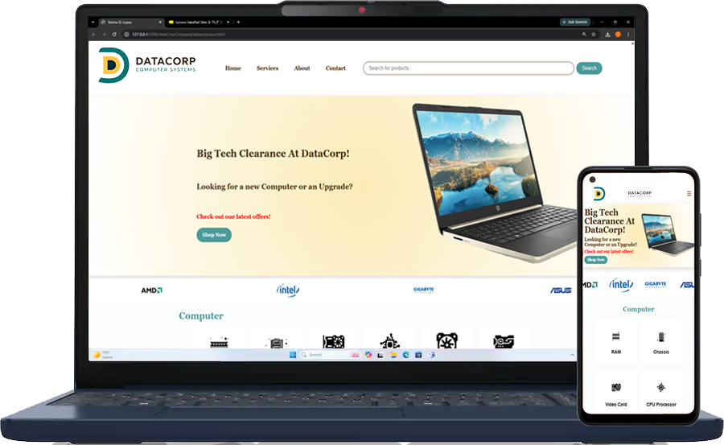
Interactive Prototype
I built a semi-finished website to bring the design to life and demonstrate behavior, interactions, and page structure.
The Existing Site
The current website contains a lot of information, but it was overwhelming and difficult to navigate. Content competed for attention, making it hard for users to find products and services quickly.
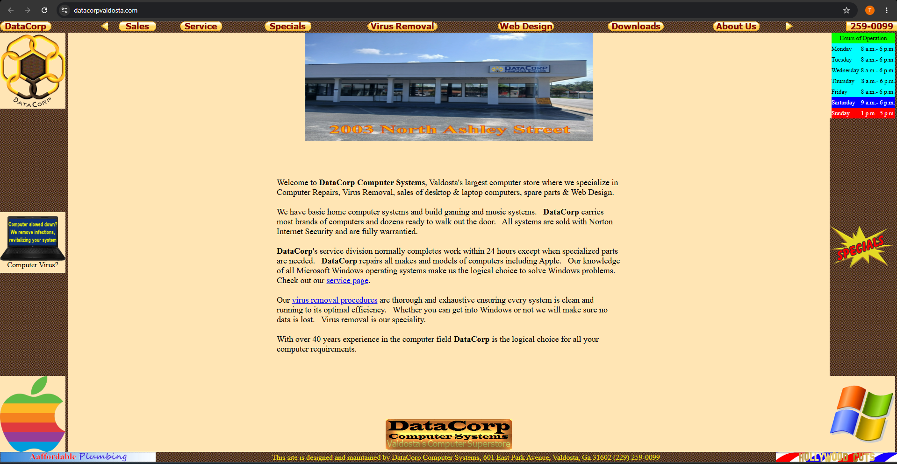
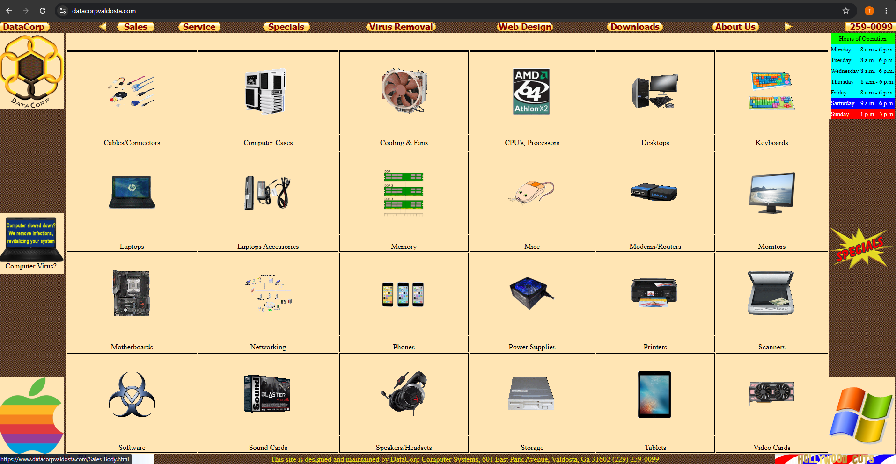
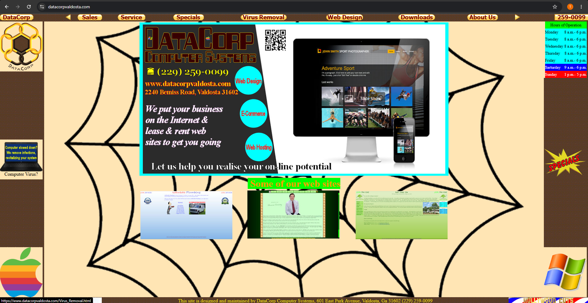
Brand Identity
I refreshed the DataCorp's visual identity with a cleaner, more modern logo and a cohesive color palette that keeps the original warm yellow and brown while adding teal as a supporting color.
Color Palette
- #f7d98b
- #4a3029
- #2fa5a5
Logo Exploration
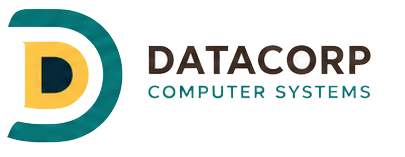
Planning the Experience
Low-Fidelity Wireframes were created to establish the information hierarchy, navigation, and layout for key pages before moving into visual design.
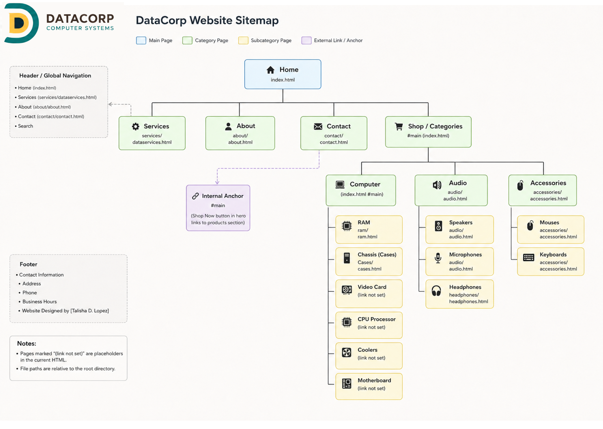
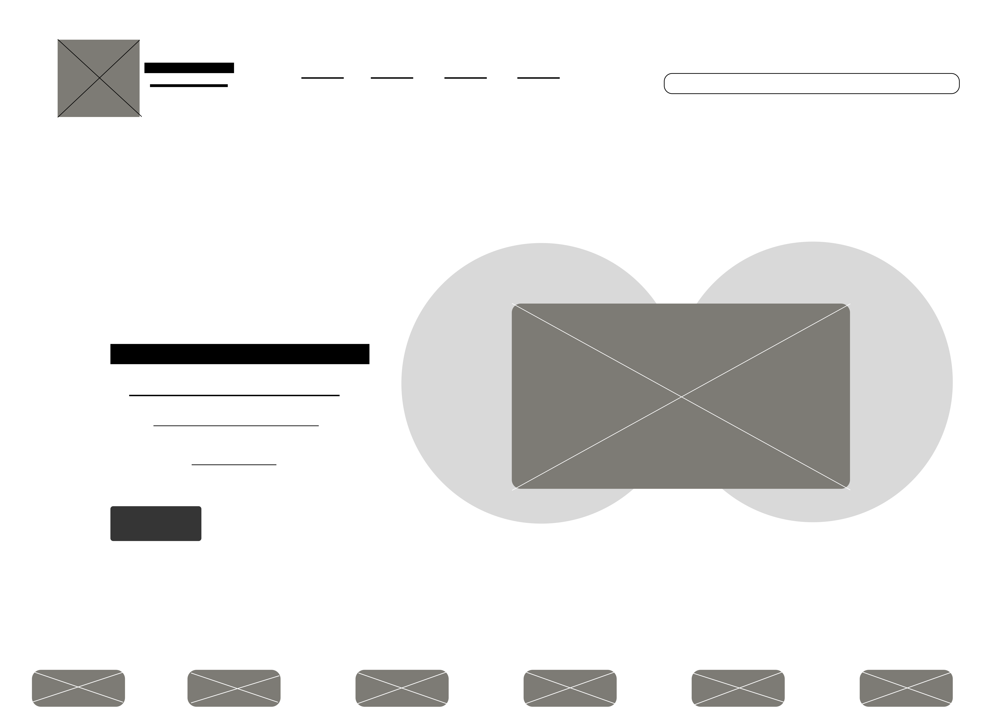
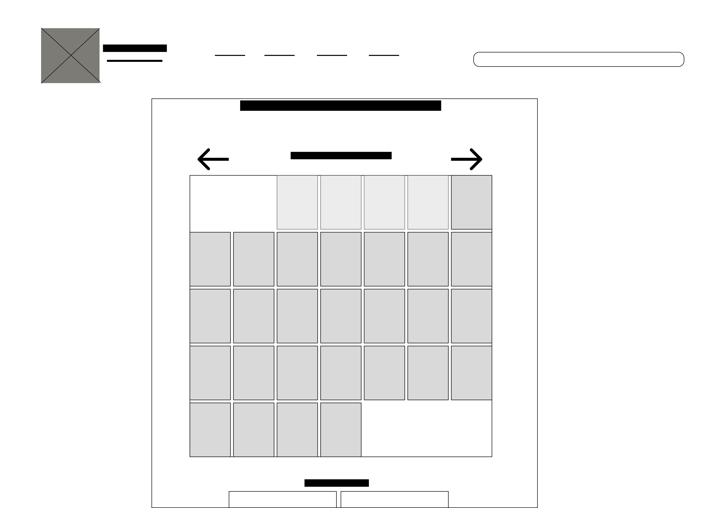
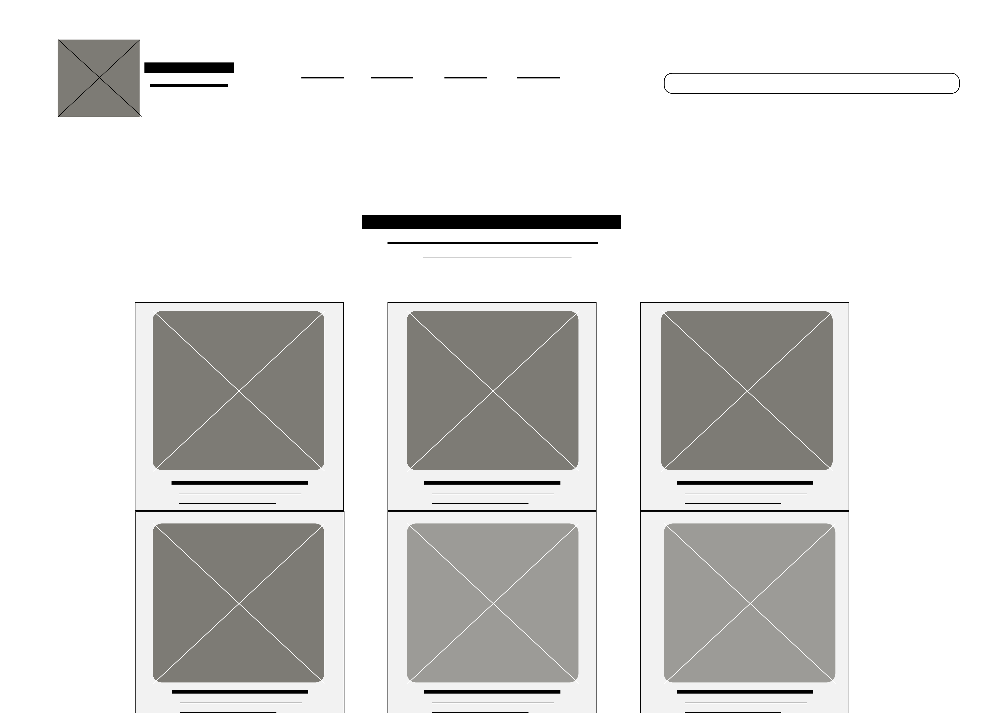
Designing for Smaller Screens
The mobile experience was designed with touch-friendly navigation and restructured layouts to ensure everything is easy to read and use on the go.
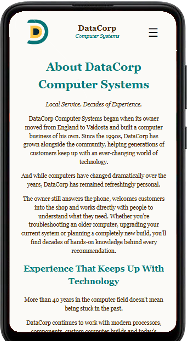
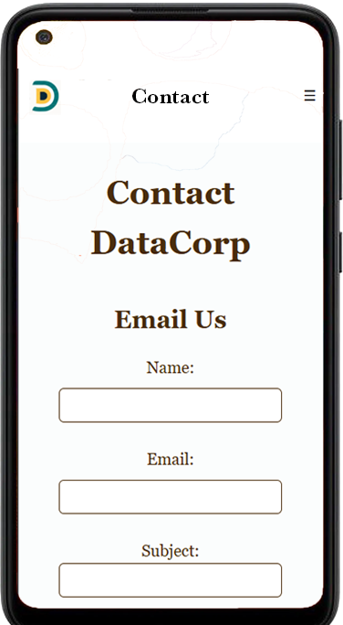
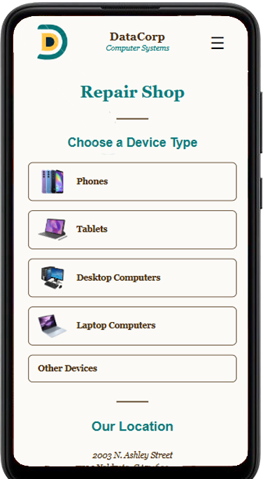
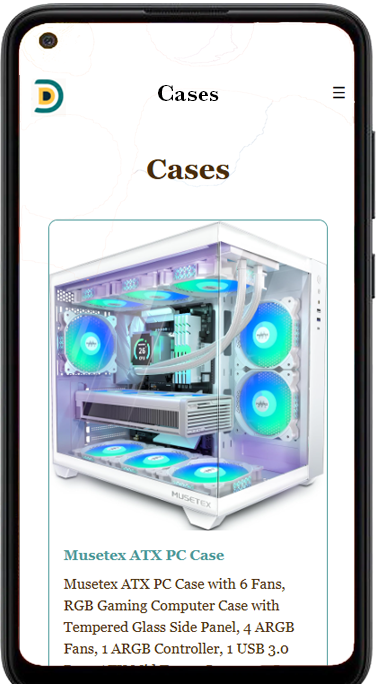
Scaling the System to Desktop
The visual system was expanded across desktop layouts to create a clean, spacious, and easy to browse shopping experience.
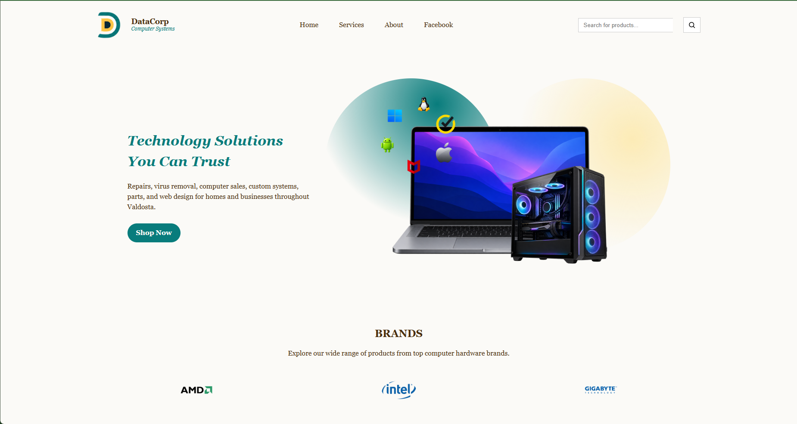
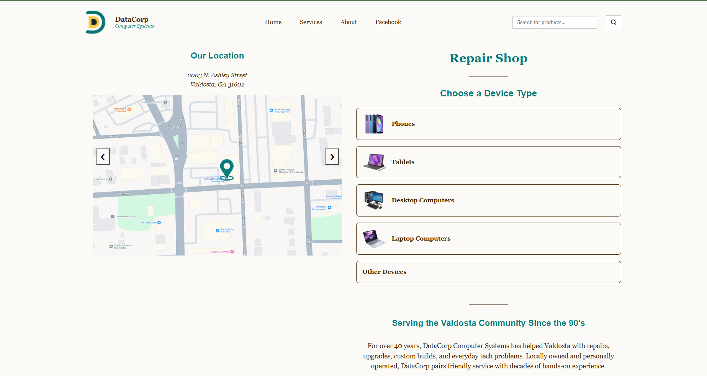
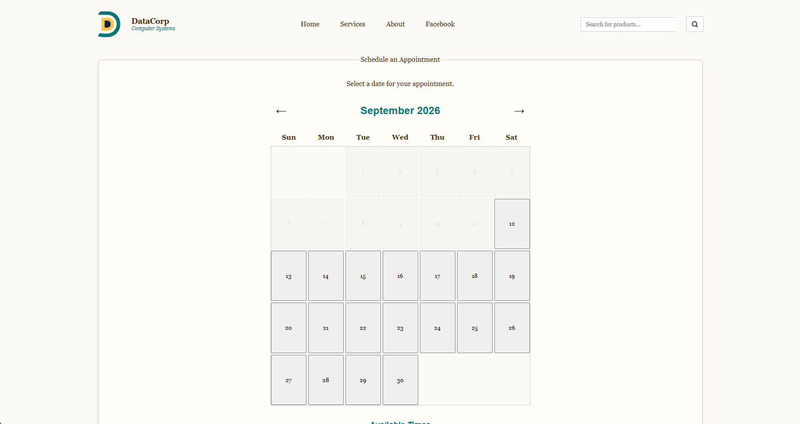
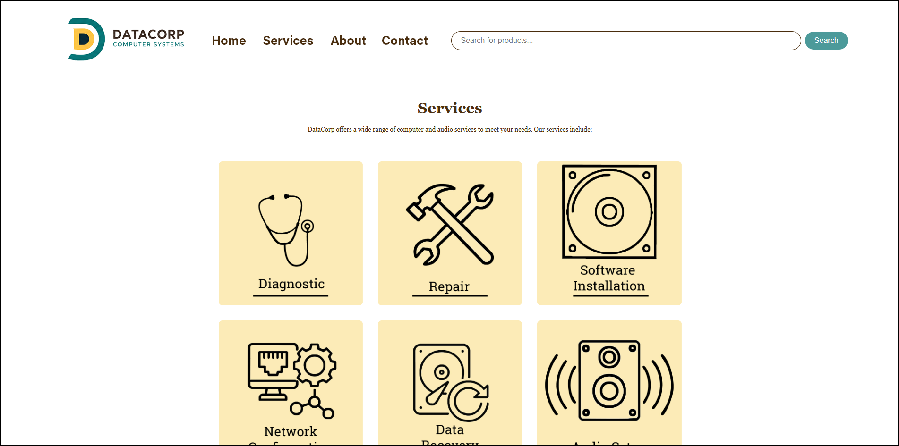
Before & After
A cleaner design, clearer hierarchy, modern visuals, and a much better experience across all devices.


Project Reflection
This project gave me the opportunity to redesign an established website without discarding the identity of the original business. I focused on reducing visual clutter, strengthening hierarchy, creating responsive layouts, and translating the design into a functional web prototype. Looking back, I would continue refining typography, spacing and component consistency.